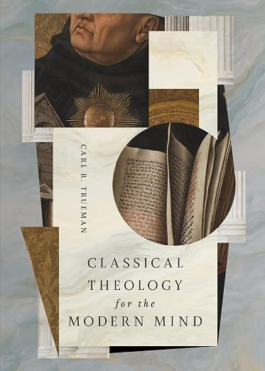

Classical Theology for the Modern Mind
How Classical Theology Counteracts Failings of Contemporary Culture
Crossway · Historical Theology · Paperback, 96 pages
Published September 29, 2026 · ISBN 9798874906207 · $16.99
From the publisher
Western culture impatiently demands practical results and therapeutic comfort. Many within the church have even adopted this mindset, falsely believing that God is most important when he is tending to our earthly needs. How can we help churches resist this pragmatic approach and instead embrace the mystery, awe, and reverence of our great God?
In Classical Theology for the Modern Mind, historical scholar Carl Trueman examines how remembering history, reciting creeds, and studying ecclesiology counter cultural pathologies that inhibit our modern minds. By retrieving wisdom, orthodoxy, and historic texts from the church fathers, medieval scholastics, and the Protestant reformers, the church will be better equipped to contemplate God and listen humbly to his word. Based on the Center for Classical Theology's annual lecture, Trueman has expanded his thoughts for pastors, students, and anyone interested in theology, culture, and the effects of our modern age.
Description adapted from the publisher, Crossway.
What reviewers are saying
"Many recent works have attempted to recover and clarify historic Christian teaching on the triune God. Trueman's work follows the best of these with remarkable force and clarity, but his little book does much more. Not only does he review the history and contours of our doctrine of God, he also shows how these central truths address some of the fundamental questions of modern life. This is a useful, pastorally sensitive book—highly recommended."
— Jonathan L. Master, President, Greenville Presbyterian Theological Seminary
"Many Christians sense that we need deeper roots but aren't sure where to begin. In this concise and lucid book, Carl Trueman opens the door to the riches of classical theology in a way that is both accessible and deeply nourishing. A timely invitation to recover the wisdom of the past for the health of the church today."
— Gavin Ortlund, President, Truth Unites; Theologian in Residence, Immanuel Nashville
Endorsements published by Crossway; more on the publisher's page.
Pulpit & Page note: we'll add our own take once we've read it. For now, this page gathers the publisher's description and what named reviewers have said.
← Back to the calendar Get the weekly email
Disclosure: Pulpit & Page may earn a commission from purchases made through our links, at no extra cost to you.